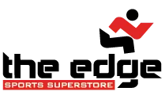

Running
Getting started on your car-free journey
-
Get the necessary equipment
The Edge Sports Superstore
Simon and Gill opened the doors to the Edge Sports Shop back in 2007. It was a small shop specialising in Running, Cycling, Swimming and Triathlon products and advice. We were the first dedicated triathlon shop to open in Ireland.
Click here to go to the The Edge Sports Superstore's website -
Sign up for a programme
Couch to 5k (C25K)
Couch to 5K is a running plan for absolute beginners. It was developed by a new runner, Josh Clark, who wanted to help his 50-something mum get off the couch and start running, too.
The plan involves 3 runs a week, with a day of rest in between, and a different schedule for each of the 9 weeks.
Click here to go to the NHS webpage on starting a C25K programme -
Join a Meetup Group
Togher AC Fit4Life
Togher AC Fit4Life, was born out of the idea that a run can be more fun with a tea/coffee or brunch to look forward to when you cross the finish line! Whether you're an experienced club runner or running yourself and struggling with motivation, Togher AC Fit4Life Group provides the place for you to meet other active people with an interest in running.
Click here to go to the Togher AC Fit4Life Group on Meetup